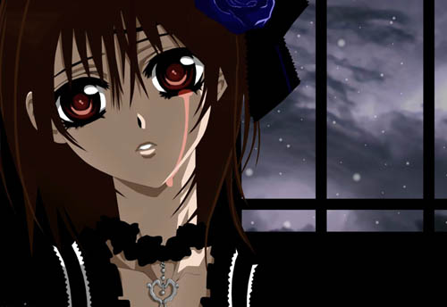
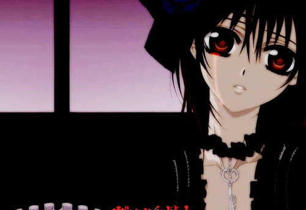
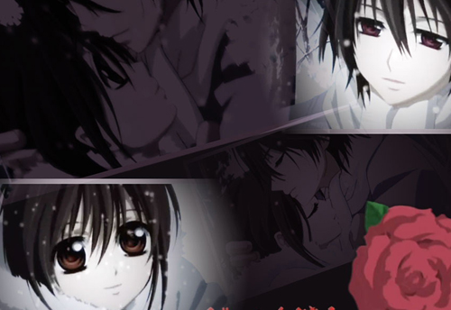
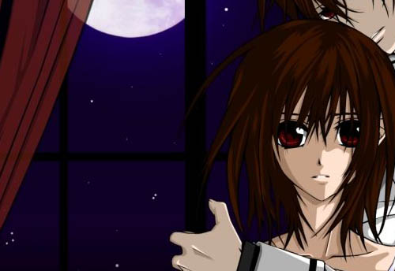
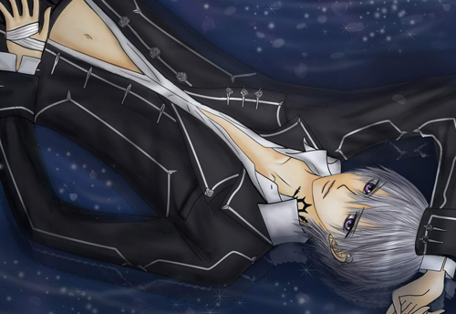
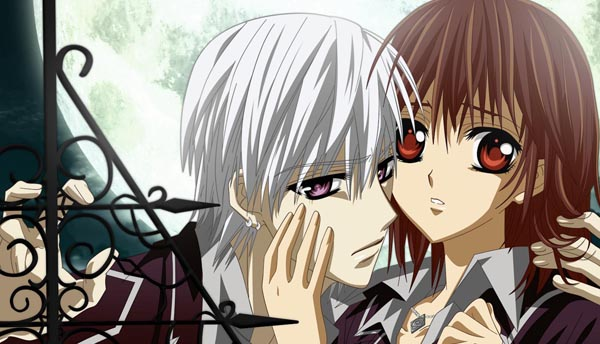

第一集
故事从一个飘雪的夜晚展开，玖兰枢（纯血种吸血鬼）在雪天里救下了遭到吸血鬼袭击的女孩黑主优姬，把她托付给了的黑主学院的理事长黑主灰阎，从此与这个女孩结下了不解之缘，优姬的记忆之门也从此刻开启。黑主学院与其他学院最大的不同就是分为日间部和夜间部，日间部都是普通的学生，而夜间部的学生都是吸血鬼，作为风纪委员的黑主优姬和锥生零，职责就是守住这个秘密，零因为家人被吸血鬼所杀对吸血鬼心存芥蒂。优姬在夜间部巡逻的时候受伤遭到吸血鬼（Level B蓝堂英）的袭击，枢赶到及时救了优姬。

第二集
一年一度的圣巧克力日，女生把巧克力送给喜欢的男生并表白，日间部的女生们都异常兴奋。圣巧克力节当日优姬和零尽力维持秩序总算没出什么问题，只是零和夜间部发生了冲突，身体也越来越不受控制。在马棚里，他藏得的血液锭剂差点被优姬发现。（那只马好搞笑）

第三集
优姬和零奉命对宿舍进行突击检查，优姬意外发现零身上藏有可疑的药品－－血液锭剂，零负气离开黑主学院，优姬也跟了出去，结果在半路和零走散了，并且遭到吸血鬼的袭击，零和枢先后赶到救下了优姬。枢和黑主理事长的谈话揭开了零是Level-D吸血鬼的秘密，与此同时零失去理智咬了优姬，也暴露了其吸血鬼的身份。
第四集
零失去理智咬伤了优姬，黑主理事长不得不把真相告诉优姬，枢和理事长商量准备把零转入夜间部。优姬明白零对吸血鬼的憎恨，于是一个人跑到夜间部的宿舍打算请求枢撤销决定，结果遭到蓝堂英的怀疑，此时枢出现，打破了僵局，并告诉优姬不会让零转入夜间部。零对咬伤优姬的事深感懊悔，决定离开学院，优姬用拥抱阻止了。

第五集
在黑主灰阎的传授下，优姬已经可以使用手链的驯化术暂时控制零，使他不至于变成吸血鬼伤害其他人，因此零可以继续留在日间部。学院内出现的神秘老师夜刈十牙似乎和零有着某种牵连，优姬和零离开学院办事的路上遇到了异变的吸血鬼LEVEL-E，反而被夜间部的一条所救，为了了解事情的原委，两人冒险进入了夜间部的月之寮，零无法忍受夜间部的气氛离开月之寮，优姬追赶上去发现零无法接受血液锭剂即将异变，关键时刻两人掉入水中，零才恢复了理志，这时自称是零师父的十牙突然出现并用枪击中了零……
第六集
十牙用施有法术的子弹射伤了零，并告诉优姬自己是零作为吸血鬼猎人时的师傅。第二天零没有来日间部上课，优姬从十牙口中得知零被隔离了，为了减轻零的痛苦，优姬自作主张找到了零，主动让零吸了自己的血。伦理课十牙和零都没有来，感到情况异常的优姬冲到零的房间，阻止十牙伤害零，十牙这才告诉她用枪射伤零是为零着想，必须克制他吸血的欲望。

第七集
这一集基本是优姬、玖兰和零三个人的回忆，剧情有些零散。从优姬被理事长收养开始，然后是零的登场，夜间部的成立等等。
第八集
枢因为优姬的事情将自己关在房中，这时一条的爷爷突然到访……零对优姬一直保持着距离，却接到了猎人协会的任务－－追捕LEVEL-E，虽然有些勉强，零还是接受了任务，优姬在暗中一路跟随，险些遭到LEVEL-E的袭击。
第九集
夜间部转来了一位神秘插班生红玛丽亚，眼中总是藏着一股忧伤，她奇怪的个性让其他吸血鬼颇感不满。红玛丽亚的出现点燃了零的复仇之心，因为红玛丽亚和杀死零家人的纯种吸血鬼－－绯樱闲似乎有着紧密的联系。

第十集
期末考试的前一天晚上，零找到了红玛丽亚，红玛丽亚毫不掩饰地承认自己正是杀害零父母的绯樱闲，但是零却因为身体受到控制无法打败她，目睹这一事件的优姬也被枢消除了记忆。突如其来的变故让零想起了多年前的往事。